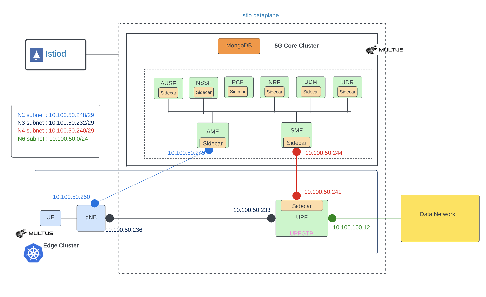

Excluding Istio interfaces for 5G core
This document contains instructions how to deploy free5gc on a single Kubernetes cluster using Helm charts. The free5gc control and data plane are deployed on a cp and dp namespaces, respectively. Both namespaces have Istio sidecar injection enabled. However, dataplane network interfaces upfgtp and n6 interfaces are excluded from the Istio service mesh. That means Istio sidecar does not monitor traffic through upfgtp and n6 interfaces, which improves the latency of data network traffic in 5G network.

Install gtpg5g kernel module
Each worker node needs gtp5g kernel module.
Due to the evolution of Linux kernel, this module would not work with every kernel version. Please run this module with kernel version 5.0.0-23-generic, upper than 5.4 (Ubuntu 20.04.1) or RHEL8.
git clone -b v0.3.1 https://github.com/free5gc/gtp5g.git
cd gtp5g
make
sudo make install
Add Helm charts
helm repo add towards5gs https://raw.githubusercontent.com/Orange-OpenSource/towards5gs-helm/main/repo/
helm repo update
Install Calico
Apply customised calico resource yaml file (we need natOutgoing and containerIPForwarding enabled for 5GC)
NOTE: cidr should match with cluster cidr.
cat <<EOF |kubectl create -f -
# This section includes base Calico installation configuration.
# For more information, see: https://projectcalico.docs.tigera.io/master/reference/installation/api#operator.tigera.io/v1.Installation
apiVersion: operator.tigera.io/v1
kind: Installation
metadata:
name: default
spec:
# Configures Calico networking.
calicoNetwork:
# Note: The ipPools section cannot be modified post-install.
ipPools:
- blockSize: 26
cidr: 192.168.0.0/16
encapsulation: VXLANCrossSubnet
natOutgoing: Enabled
nodeSelector: all()
containerIPForwarding: Enabled
---
# This section configures the Calico API server.
# For more information, see: https://projectcalico.docs.tigera.io/master/reference/installation/api#operator.tigera.io/v1.APIServer
apiVersion: operator.tigera.io/v1
kind: APIServer
metadata:
name: default
spec: {}
EOF
kubectl create -f https://raw.githubusercontent.com/projectcalico/calico/v3.24.1/manifests/tigera-operator.yaml
Install Istio
Follow istio installation instructions from here
istioctl install -y
Create dp and cp namespaces and label dp and cp for sidecar injection.
kubectl create ns dp
kubectl create ns cp
kubectl label ns cp istio-injection=enabled
kubectl label ns dp istio-injection=enabled
Create Istio gateway and virtual service for free5gc Web-UI.
cat <<EOF |kubectl create -f -
apiVersion: networking.istio.io/v1alpha3
kind: Gateway
metadata:
name: webui-gateway
spec:
selector:
istio: ingressgateway
servers:
- port:
number: 80
name: http
protocol: HTTP
hosts:
- "*"
---
apiVersion: networking.istio.io/v1alpha3
kind: VirtualService
metadata:
name: webui
spec:
hosts:
- "*"
gateways:
- webui-gateway
http:
- route:
- destination:
host: webui-service.cp.svc.cluster.local
port:
number: 5000
EOF
Install Multus
Multus CNI is needed to have multiple interfaces on 5G CNFs (pods).
kubectl apply -f https://raw.githubusercontent.com/k8snetworkplumbingwg/multus-cni/33c0d1bd86b22106442c84b8d9e28945cf6182e3/deployments/multus-daemonset-thick.yml
Install free5gc
NOTE: you may need to tune your network interface names and data network subnet. Check this documentation how to do that.
In this example the interface name is ens3 (instead of the default eth0), data network (n6) configuration should match your host interface (ens3) details. E.g: if your host interface (ens3) subnet ip is 10.237.72.0/24 and gateway address is 10.237.72.1. Then n6 interface details should be like below. global.n6network.subnetIP=<”10.237.72.0”>, global.n6network.gatewayIP=<”10.237.72.1”> and upf.n6if.ipAddress=<”10.237.72.XX”>. Pick a free ip address in that subnet.
Install free5gc data plane (UPF) to dp namespace.
NOTE: N6 network
cidrdefault is 24 and is omited below.upf.n6if.ipAddressis an extra ip address(not host ip) you need reserve in advance. Contact network administrator in case this address is blocked by certain security rule in your network.
helm upgrade --install intel -n dp \
--set global.n4network.masterIf=ens3 \
--set global.n3network.masterIf=ens3 \
--set global.n6network.masterIf=ens3 \
--set global.n6network.subnetIP="10.237.72.0" \
--set global.n6network.gatewayIP="10.237.72.1" \
--set upf.n6if.ipAddress="10.237.72.20" \
--set upf.podAnnotations."traffic\.sidecar\.istio\.io\/excludeInterfaces"="upfgtp\, n6" \
towards5gs/free5gc-upf
Note: Istio unable to inject the sidecar to upf pod. It is showing “ Warning Unhealthy 18s (x10 over 45s) kubelet Readiness probe failed: Get “http://192.168.47.205:15021/healthz/ready”: context deadline exceeded (Client.Timeout exceeded while awaiting headers)”. A temporary hack would be edit deployment of upf and add an annotation
status.sidecar.istio.io/port: "0"and wait for pod to restart.
Install free5gc control plane to cp namespace.
helm upgrade --install intel -n cp \
--set deployUPF=false \
--set deployWEBUI=false \
--set mongodb.persistence.enabled=false \
--set global.n2network.masterIf=ens3 \
--set global.n3network.masterIf=ens3 \
--set global.n4network.masterIf=ens3 \
--set global.n6network.masterIf=ens3 \
--set global.n9network.masterIf=ens3 \
towards5gs/free5gc
Install free5gc WebUI to cp namespace.
Set WEBUI_SERVICE_TYPE as follows depending if you are installing with or without Istio.
# With Istio
export WEBUI_SERVICE_TYPE=LoadBalancer/NodePort
# Without Istio
export WEBUI_SERVICE_TYPE=NodePort
helm upgrade --install webui -n cp \
--set webui.service.type=$WEBUI_SERVICE_TYPE \
towards5gs/free5gc-webui
Install Verification
The control plane deployment should look like this. Note the two containers per pod due to the Istio sidecars.
kubectl get pod -n cp
NAME READY STATUS RESTARTS AGE
intel-free5gc-amf-amf-95f88965b-qvvsn 2/2 Running 0 21h
intel-free5gc-ausf-ausf-7994587f88-5nsld 2/2 Running 0 21h
intel-free5gc-nrf-nrf-67d7d8cf66-kn4p9 2/2 Running 0 21h
intel-free5gc-nssf-nssf-5cb78f9b9c-xm7vn 2/2 Running 0 21h
intel-free5gc-pcf-pcf-6cd66d46d4-s8n2f 2/2 Running 0 21h
intel-free5gc-smf-smf-c7d9fcffd-j7lv5 2/2 Running 0 21h
intel-free5gc-udm-udm-58b4d54bbf-dxmbs 2/2 Running 0 21h
intel-free5gc-udr-udr-78d5484d58-htc9m 2/2 Running 0 21h
intel-free5gc-webui-webui-5f975d95fd-dzrtj 2/2 Running 0 21h
mongodb-0 2/2 Running 0 21h
The data plane deployment should look like this.
kubectl get pod -n dp
NAME READY STATUS RESTARTS AGE
intel-free5gc-upf-upf-67ddd9967d-gklrr 2/2 Running 0 21h
Check the Web UI access.
NOTE: the below requires that your cluster supports service type
LoadBalancer. Otherwise you need to use some other mechanism to access the Web UI.
IP=$(kubectl get svc -n istio-system istio-ingressgateway -o jsonpath="{.status.loadBalancer.ingress[0].ip}")
curl $IP
Use a web bowser to access the URL http://${IP}, login credentials are admin/free5gc. Add a subscriber (UE).
Install ueransim simulator on a newly created sim namespace.
NOTE: subscriber adding is necessary before sim component installation, if uesimtun0 created failed, try uninstall sim with
helm uninstall sim -n simand redeploy to fix it.
helm install sim -n sim --create-namespace \
--set global.n2network.masterIf=ens3 \
--set global.n3network.masterIf=ens3 \
towards5gs/ueransim
The simulator deployment should look like this.
kubectl get pod -n sim
NAME READY STATUS RESTARTS AGE
sim-ueransim-gnb-6dffd9c777-qlz7l 1/1 Running 0 64m
sim-ueransim-ue-6cf9b565d8-skp54 1/1 Running 0 64m
Testing
Access exteral services from UE simimulator via data network.
# Get the UE Pod name by running:
export POD_NAME=$(kubectl get pods --namespace sim -l "component=ue" -o jsonpath="{.items[0].metadata.name}")
# Check that uesimtun0 interface has been created by running these commands:
kubectl --namespace sim exec -it $POD_NAME -- ip address
# Try to access internet from the UE by running:
kubectl --namespace sim exec -it $POD_NAME -- ping -I uesimtun0 corp.intel.com
You should see our NTP server responding ;)
To test istio’s excludeInterfaces feature, run the httpbin server anywhere in your network.
docker run -p 8080:80 kennethreitz/httpbin
Try to access it from the UE by running:
kubectl --namespace sim exec -it $POD_NAME -- curl --interface uesimtun0 -v http://<IP_ADDR_OF_HTTPBIN_HOST>:8080/headers
* Trying 10.237.72.78...
* TCP_NODELAY set
* Connected to 10.237.72.78 (10.237.72.78) port 8080 (#0)
> GET /headers HTTP/1.1
> Host: 10.237.72.78:8080
> User-Agent: curl/7.58.0
> Accept: */*
>
< HTTP/1.1 200 OK
< Server: gunicorn/19.9.0
< Date: Fri, 09 Dec 2022 11:51:09 GMT
< Connection: keep-alive
< Content-Type: application/json
< Content-Length: 111
< Access-Control-Allow-Origin: *
< Access-Control-Allow-Credentials: true
<
{
"headers": {
"Accept": "*/*",
"Host": "10.237.72.78:8080",
"User-Agent": "curl/7.58.0"
}
}
* Connection #0 to host 10.237.72.78 left intact
As we exlcluded upf network interfaces upfgtp and n6, the data doesn’t go through the istio’s sidecar. We can see it from the reply. If the reply comes back through istio’s sidecar, few extra fields will be added to the reply. e.g. “x-envoy-upstream-service-time”, “server: istio-envoy” and “x-envoy-decorator-operation”.